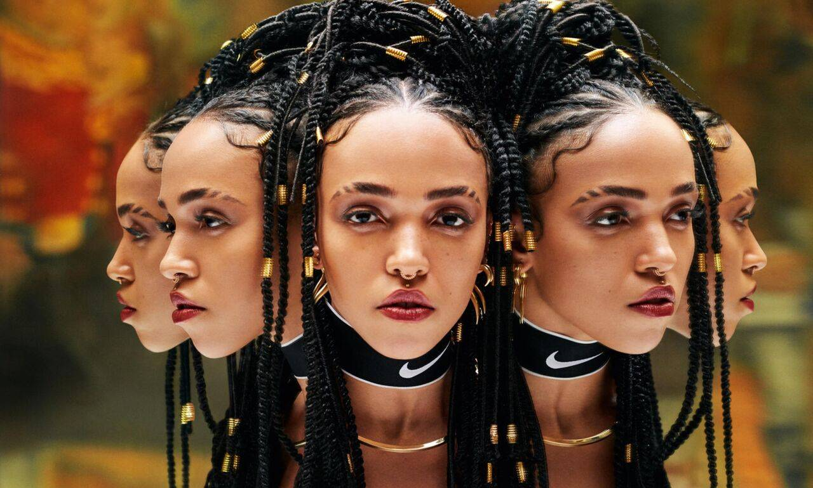
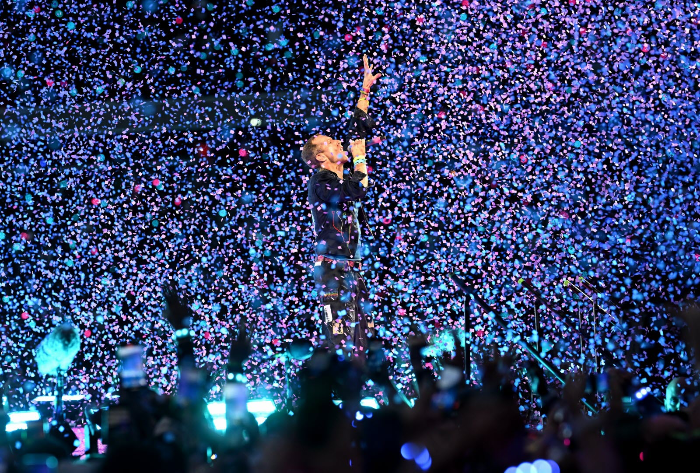
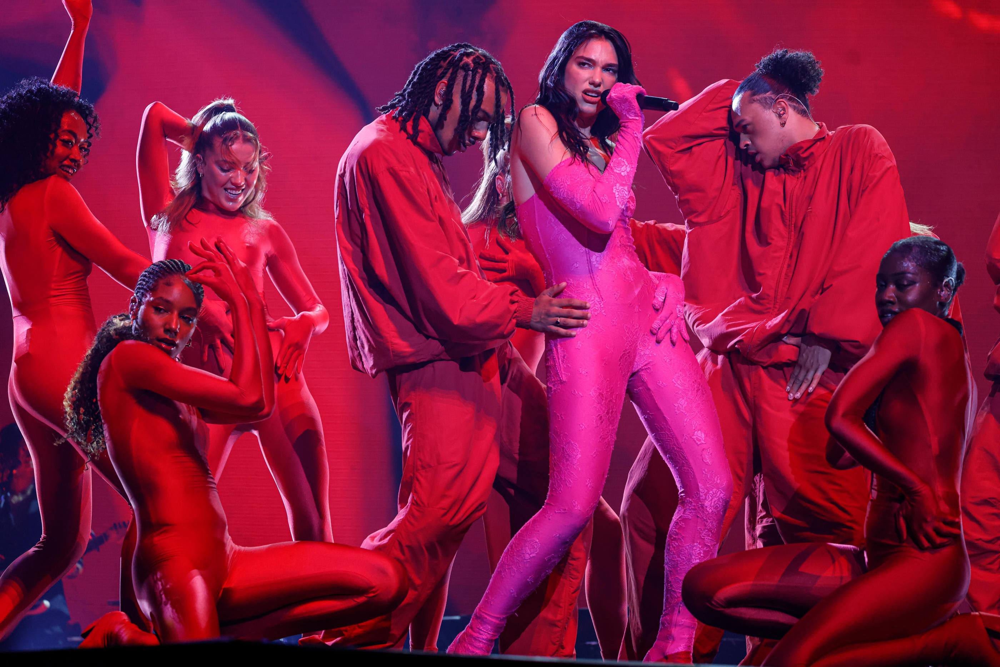
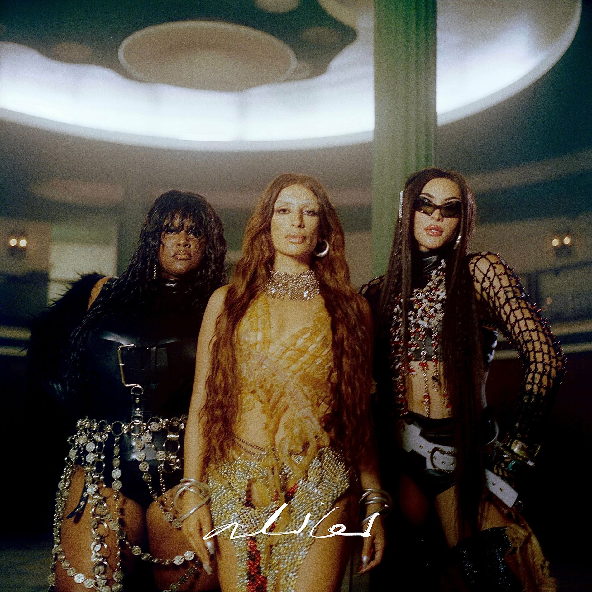
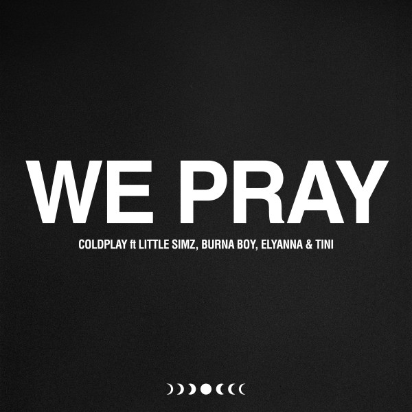
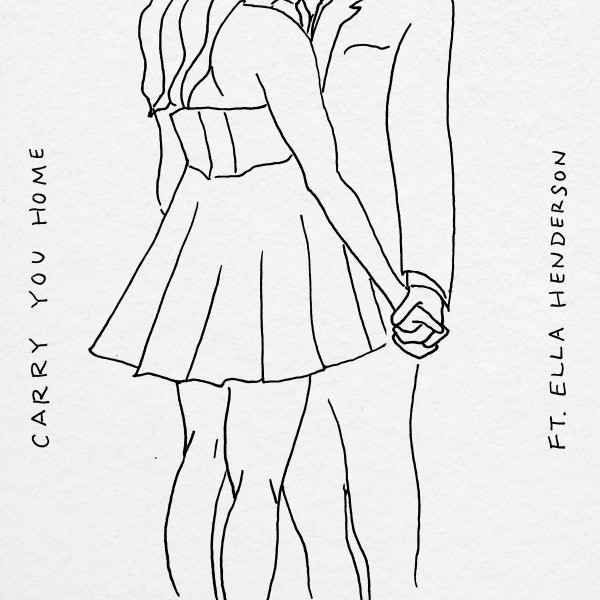
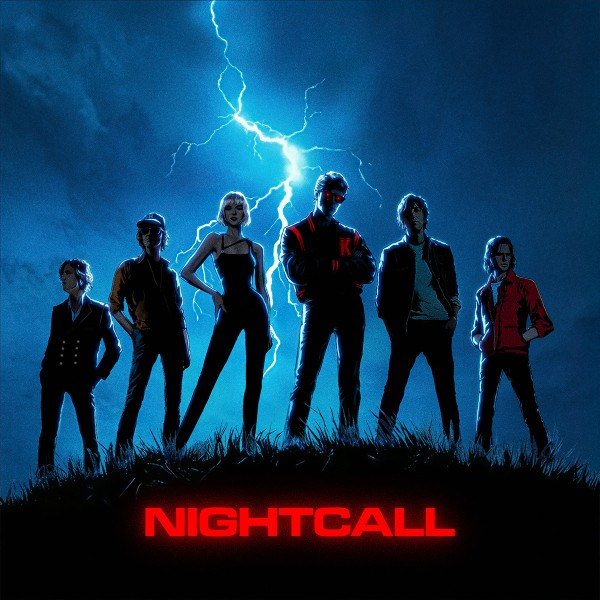
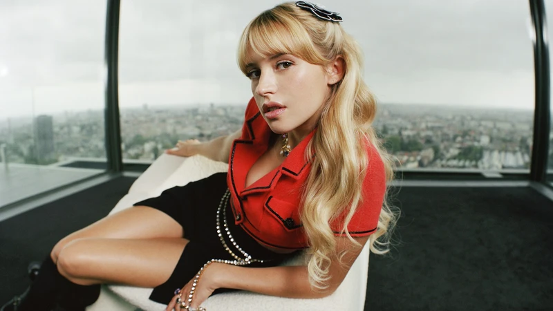

FKA twigs revient avec son album EUSEXUA
FKA twigs fusionne des sonorités dance des années 2000 et des influences R&B et Pop

Fusionne des sonorités dance des années 2000 et des influences R&B et Pop
FKA twigs fusionne des sonorités dance des années 2000 et des influences R&B et Pop

Les concerts de Coldplay prévus en Inde en janvier 2025 ont suscité un engouement massif, avec 13 millions de personnes tentant d'acheter 150 000 billets, provoquant le crash de la plateforme de vente. Les billets, initialement vendus entre 22 et 380 euros, ont rapidement été revendus sur le marché noir à des prix exorbitants
La gagnante de la saison 12, s'est confiée sur son premier album et le succès de son titre Ma faute

Son dernier album a franchi le cap des 100 000 ventes en France, porté par les tubes Houdini et Training Season
Sevdaliza / Pablo Vittar / Yseult

Andrea Bocelli / Karol G
Coldplay / Little Simz / Burna Boy / Elyanna & Tini

Alex Warren / Ella Henderson

Kavinsky / Angèle / Phoenix

Rappeur lillois d'origine modeste, explore dans sa musique un univers qu'il qualifie de "dope boy blues". Influencé par son parcours personnel, marqué par une descente dans la précarité à l'adolescence, il raconte une réalité brute avec un style à la fois spontané et lucide.
Issu d'une famille de musiciens classiques, Birdie a pourtant trouvé sa voix dans le rap, un genre qu’il perçoit comme plus connecté à son environnement social et à son vécu. Son dernier EP, The Birdie Tale II, reflète une palette musicale variée, intégrant des sonorités boom bap et West Coast tout en restant ancré dans une écriture très personnelle.
Il aborde aussi des thèmes profonds comme la lutte des classes, les inégalités sociales et les violences policières, tout en exprimant une forte conscience politique. Fier de son identité juive, il critique également l’antisémitisme dans le rap et milite pour une représentation équilibrée et inclusive des minorités.
Enfin, l’artiste met en avant l’importance de la spontanéité et de l’authenticité dans sa musique, tout en reconnaissant les défis liés à sa position dans le milieu rap actuel.

À 28 ans, Angèle est devenue une figure majeure de la pop internationale tout en restant fidèle à ses valeurs et à sa simplicité. Artiste complète, elle a marqué les esprits avec ses albums Brol et Nonante-cinq, des concerts mémorables, un documentaire sur Netflix, et des apparitions au Met Gala et à Coachella. Sa prestation à la cérémonie de clôture des JO de Paris 2024 a confirmé son statut d’icône mondiale.
Malgré son succès, elle conserve une grande proximité avec ses fans, partageant ses doutes et sa vision engagée de la vie. Angèle évoque son besoin de prendre son temps dans un monde où tout va très vite, ainsi que son cheminement vers une légitimité artistique. Elle confie également sa vision de son métier, où l’envie de plaire à tout le monde peuvent peser sur son authenticité.
Féministe et engagée, Angèle continue de défendre des messages à travers ses chansons comme Balance ton quoi et Ta Reine, qui abordent des sujets de société cruciaux. Sa collaboration avec Dua Lipa sur Fever lui a ouvert les portes du public international.
Angèle met un point d’honneur à rester sincère et vulnérable dans tout ce qu’elle fait, que ce soit en musique, dans ses clips ou même dans ses expériences hors de sa zone de confort, comme la danse contemporaine et le cinéma. L’artiste, consciente de ses hauts et de ses bas, souhaite transmettre un message d’espoir et d’émancipation à tous ceux qui la suivent, une icône accessible et inspirante.